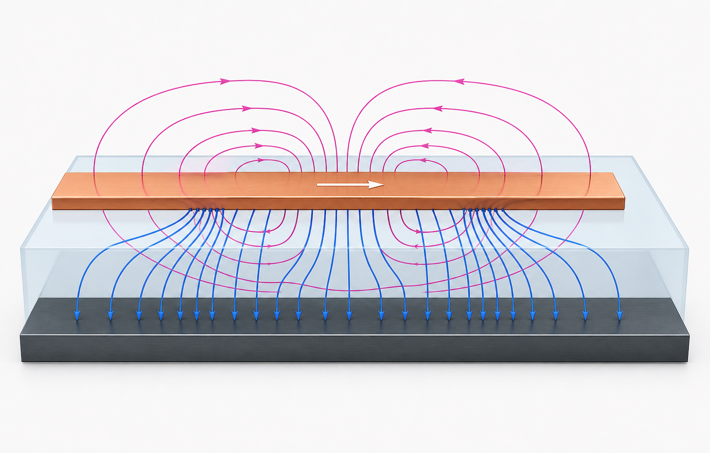
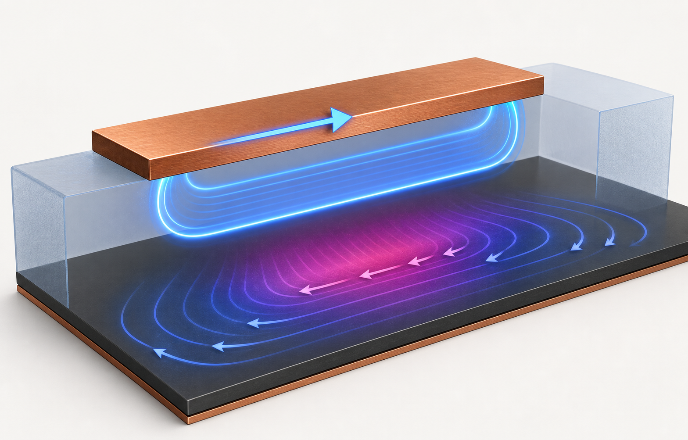
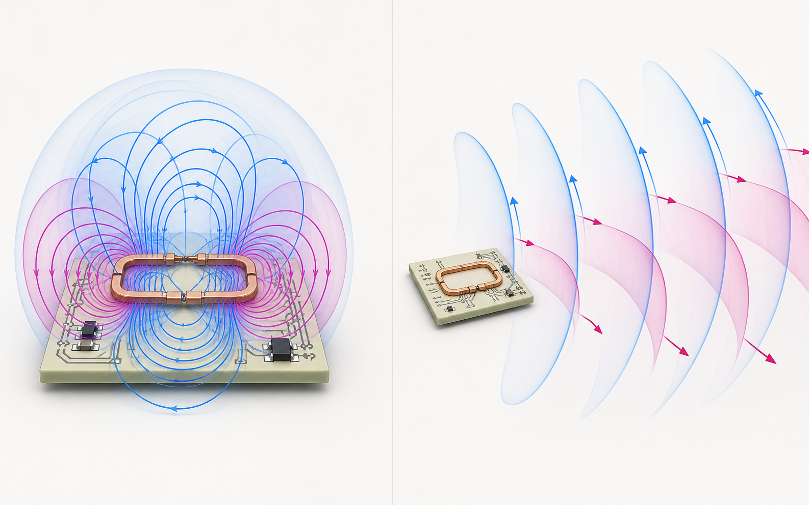

PART II · FIELDS & WAVES
06 전자기학의 최소 골격
E, H, B, flux와 Maxwell 방정식의 물리적 메시지를 잡는다.
electric fieldmagnetic fieldfluxPoynting
한 문장 직관
회로가 전달하는 에너지는 전자가 동박 안을 빠르게 달려 부하로 운반하는 것이 아니라, 주로 도체 주변 유전체 공간의 전기장과 자기장을 통해 이동한다.
전기장 E는 전하가 받는 힘의 방향과 크기를, 자기 flux density B는 움직이는 전하와 자성체가 경험하는 효과를 기술한다. 회로 엔지니어링에서는 재료를 포함하기 위해 D = εE, B = μH로 electric flux density D와 magnetic field H도 쓴다. field는 보이지 않지만 capacitance, inductance, coupling, propagation, radiation이라는 측정 가능한 결과를 만든다.
Maxwell 방정식이 말하는 네 가지
식을 풀지 못해도 의미는 설계에 직접 쓰인다. current loop를 줄이면 magnetic coupling이 줄고, 빠른 dv/dt 노드의 면적을 줄이면 capacitive coupling이 줄며, 기준면을 가까이 두면 field가 좁은 공간에 갇혀 외부 결합과 loop inductance가 함께 작아진다. 에너지 흐름 밀도는 S = E × H인 Poynting vector로 표현한다.
LAB 06
도체 쌍 주변의 장과 에너지 흐름
trace와 reference plane 사이 간격이 field confinement를 어떻게 바꾸는지 본다.
도식은 정성적이다. 실제 field는 geometry와 유전체 경계조건을 푸는 field solver로 구한다.
PLATE 06A
마이크로스트립 주변의 E·H field
전기장은 두 도체 사이에서 끝나고, 자기장은 전류를 감싸는 닫힌 고리를 만든다.

PLATE 06B
에너지는 구리 안보다 유전체 공간을 지난다
Poynting vector는 E와 H가 겹치는 공간에서 전원에서 부하로 향한다.

PLATE 06C
Near field에서 far field로
source 가까이서는 반응성 저장 에너지가, 멀리서는 진행파가 지배한다.

Maxwell 방정식에서 PCB의 장까지
전하는 E field의 시작과 끝이다
∇·D=ρ는 free charge가 electric flux의 source임을 뜻한다. 신호 trace의 표면전하 분포는 길이 방향 전압 변화와 주변 E field를 만든다. edge가 진행할 때 “전자가 선 끝까지 즉시 이동”하는 것이 아니라 표면전하와 field의 재배치가 유한한 속도로 전파된다.
전류와 변위전류가 H field를 닫는다
∇×H=J+∂D/∂t에서 ∂D/∂t는 유전체를 가로지르는 displacement current다. capacitor의 dielectric에 전자가 통과하지 않아도 외부 도선의 전류가 연속일 수 있는 이유다. 빠른 switch node의 stray C가 chassis에 common-mode current를 보내는 것도 같은 항이다.
변하는 E와 H는 서로를 만든다
∇×E=−∂B/∂t는 시간에 따라 바뀌는 magnetic flux가 순환 E field를 만든다는 뜻이다. loop area와 di/dt가 커질수록 이 유도 전압이 커진다. 그래서 “ground 저항이 낮다”만으로는 빠른 귀환 경로가 좋은지 판단할 수 없고 loop inductance를 봐야 한다.
경계조건이 field의 모양을 정한다
좋은 도체 표면의 tangential E는 매우 작고, 표면전하가 normal D의 불연속을, 표면전류가 tangential H의 불연속을 만든다. trace 폭·plane 거리·유전체가 바뀌면 이 경계조건을 만족하는 field 분포가 바뀌므로 C′, L′, Z0와 지연이 함께 바뀐다.
Poynting 정리 ∂u/∂t + ∇·S = −J·E는 field energy의 감소, 공간을 빠져나간 전력, 도체에서 열로 바뀐 전력을 하나의 보존식으로 묶는다. 회로의 P=VI는 이 장 에너지 흐름을 단자에서 적분해 본 표현이다.
손으로 푸는 예제 · 작은 capacitance의 에너지
50 pF 구조가 3.3 V로 충전되면 저장 에너지는 ½CV² = 0.5×50 pF×(3.3 V)² ≈ 272 pJ다. 이 전압이 매초 100만 번 0→3.3 V로 충전되고 매번 저항에서 소산된다면 동적 전력의 1차 근사는 C·V²·f = 0.545 mW다. 실제 CMOS에서는 activity factor와 여러 내부 capacitance가 곱해진다.
상식 점검: 전압을 두 배로 하면 저장 에너지와 dynamic power는 네 배가 된다.
PCB에서
microstrip의 field 일부는 solder mask와 공기에, 일부는 laminate에 존재한다. stripline은 두 reference plane 사이에 field가 더 강하게 갇힌다. trace 폭, plane 거리, εr가 capacitance와 inductance per length를 바꾸고 결국 characteristic impedance와 propagation velocity를 정한다. connector, via, plane gap에서 field geometry가 급히 바뀌면 discontinuity가 된다.
source에 가까운 near field에서는 E/H 비가 자유공간 파동 impedance로 고정되지 않고 source의 capacitive/inductive 성격이 강하다. 충분히 먼 far field에서는 E와 H가 결합된 traveling wave로 거동한다. λ/(2π)는 작은 source의 전이 영역을 짐작하는 출발점일 뿐, board·cable 크기와 geometry에 따라 경계가 달라진다.
측정에서
near-field probe는 E 또는 H field에 민감한 작은 sensor로 board 위의 결합 hotspot을 찾는다. 절대 방사량을 바로 말해 주는 안테나는 아니지만 원인 위치를 좁히는 데 유용하다. probe 방향과 높이를 고정하고 before/after를 같은 조건으로 비교해야 한다. scope probe loop도 원치 않는 H-field sensor가 될 수 있다.
오개념 경보
“전기 에너지는 copper 안을 흐르고 절연체는 아무 일도 하지 않는다.”
conductor는 경계조건과 전류 경로를 만들지만 energy density는 도체 사이 유전체의 E와 H에 존재한다. laminate의 Dk와 Df, plane 간격, solder mask가 신호 속도·손실·임피던스에 영향을 주는 이유다. “ground plane은 단지 0 V 금속판”이라는 생각도 field와 return path를 놓친다.
셀프 체크
변하는 magnetic field가 만드는 것은?
Maxwell–Faraday 법칙에 따라 순환하는 electric field, 즉 유도 전압을 만든다.
reference plane을 trace 가까이에 두면 좋은 이유는?
field가 좁은 공간에 집중되고 return loop inductance와 외부 coupling이 줄기 때문이다.
Poynting vector의 방향은?
E×H 방향이며 단위 면적당 electromagnetic power flow를 나타낸다.